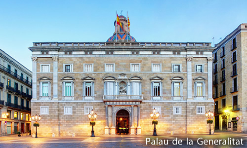

La plaza de San Jaime de Barcelona (Plaça de Sant Jaume) es una de las principales, más antiguas y representativas plazas de la Ciudad Condal. Está ubicada en el centro de la ciudad, donde se encontraba el núcleo de la antigua Barcino; en ella se sitúan el Palacio de la Generalidad catalana y la sede del Ayuntamiento de Barcelona o Casa de la Ciudad.
Esta plaza tiene un gran valor histórico pero es relativamente reciente. Su origen es de principios del siglo XIX, cuando se construyó la nueva fachada del Ayuntamiento y se derribó la antigua iglesia de San Jaime que fue, posiblemente, la más antigua de la ciudad. La tradición afirmaba que había sido fundada por el mismo Santiago, ya que se levantaba en el lugar donde él había estado predicando.
Mirando hacia el mar, podemos encontrar el Ayuntamiento de Barcelona. Desde 1979 sus responsables políticos son escogidos por sufragio universal por los ciudadanos de Barcelona con derecho a voto, en elecciones celebradas cada cuatro años.
El edificio se llama Casa de la Ciudad o Palacio Municipal y tiene su origen en 1369, con el Salón de Ciento, aunque a lo largo de los siglos ha sufrido múltiples remodelaciones.
Su fachada principal es de estilo neoclásico y fue realizada en 1847, por Josep Mas i Vila junto con la urbanización de la plaza. En su esquema, se adelanta la parte central en el primer piso con cuatro grandes columnas con capiteles jónicos que forman el balcón presidencial. Se remata la fachada con un ático formando un frontón con el escudo de la ciudad proyectado en 1855 por el arquitecto Francesc Daniel Molina, sucesor en el cargo de Josep Mas i Vila. En la parte baja a ambos lados de la entrada están las esculturas del rey Jaime I y del consejero Joan Fiveller. Son obras del escultor Josep Bover i Mas, inauguradas el día 6 de junio de 1844 por la reina Isabel II.
Siguiendo la simetría de la parte central, los laterales están formados por dos cuerpos de tres plantas. Podemos ver grandes ventanales de medio punto en la planta baja, ventanas con balcón en el primer piso y ventanas más pequeñas en el segundo.
En la calle de la Ciudad está la antigua fachada gótica de 1399 que se había utilizado hasta la construcción de la neoclásica como puerta principal. Por otra parte, en el lado que da a la plaza de San Miguel, está la parte más moderna; son unas construcciones añadidas para el servicio administrativo de los ciudadanos, el Novíssim (Novísimo) de 1958 inaugurándose en 1970, un edificio de quince plantas de vidrio.

Nuevamente en la Plaza de San Jaime, mirando contra al mar se encuentra el palacio de la Generalidad (Palau de la Generalitat en catalán). Es la sede de la Presidencia de la Generalidad de Cataluña y uno de los pocos edificios de origen medieval en Europa que se mantiene como sede del gobierno y de la institución que lo construyó. Se trata de un edificio pre-existente. Al convertirse en un aparato político, debió de adaptarse a sus nuevas funciones con construcciones y remodelaciones desde principios del siglo XV hasta mediados del siglo XVII. Podemos encontrar elementos góticos como el patio central, su gran escalinata y las galerías que lo circundan. Asimismo, el gótico flamígero está presente en la fachada de la calle del Obispo y la de la capilla de San Jorge. Por último, cabe destacar la gran fachada renacentista de la plaza San Jaime.
Pere Blai fue el arquitecto que en 1596 levantó la fachada principal en estilo renacentista en esta plaza, siendo la primera gran fachada de este estilo arquitectónico en Cataluña.
En ésta, sobre la puerta principal, se encuentra una Escultura también renacentista de San Jorge (sant jordi) que es el patrono de la cuidad.
Dice la leyenda había un dragón que atacaba al reino. Muertos de miedo, los habitantes decidieron entregarle cada día dos corderos al dragón para satisfacer su hambre y que no atacase la villa. Pero cuando los animales empezaron a escasear, decidieron enviar a una persona —escogida por sorteo— y sólo un cordero.
Un día fue la princesa la escogida por sorteo para acompañar al cordero. En la cueva del dragón, la princesa se encontró al caballero Jordi, quién mató al dragón clavándole su espada y la salvó. De la sangre que brotó del cuerpo sin vida del monstruo nació una rosa roja que el caballero ofreció a la princesa.
Por eso, en Cataluña, cada 23 de abril se celebra cada año la Diada de Sant Jordi, donde los hombres regalan una rosa con una espiga de trigo a las mujeres, como si de un caballero y una princesa se trataran. Ellas les regalan un libro, recordando el fallecimiento de dos grandes de la literatura europea, Cervantes y Shakespeare, y de Inca Garcilaso.
Sant Jordi es por excelencia el patrón de los enamorados en Cataluña, robándole en este sentido, casi todo el protagonismo a San Valentín.
A esta tradición centenaria, se suma el hecho de que en 1995, la UNESCO declaró también el 23 de abril Día Mundial del libro.